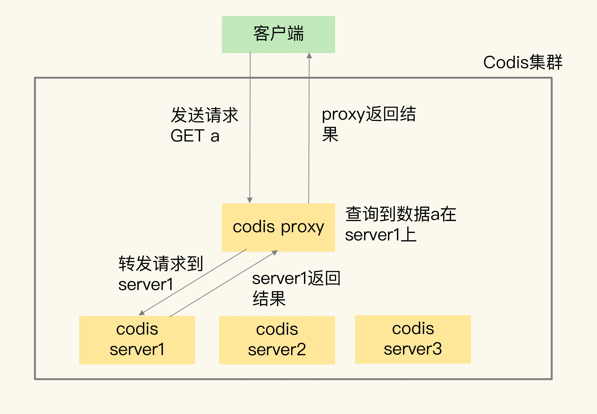
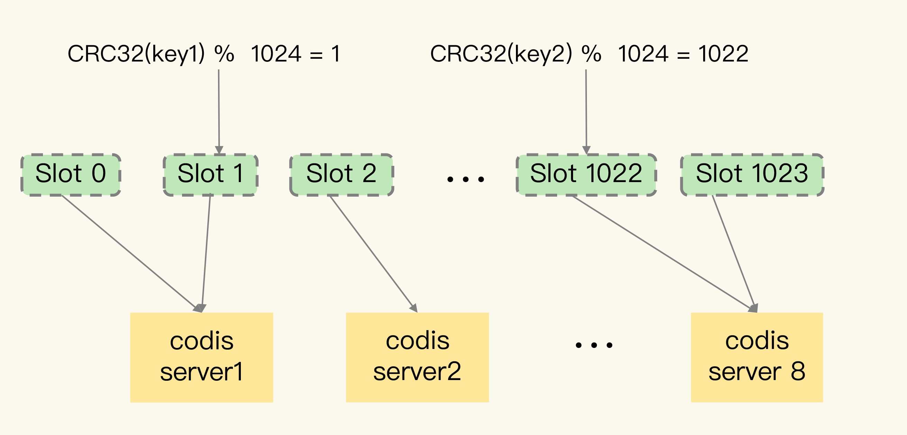
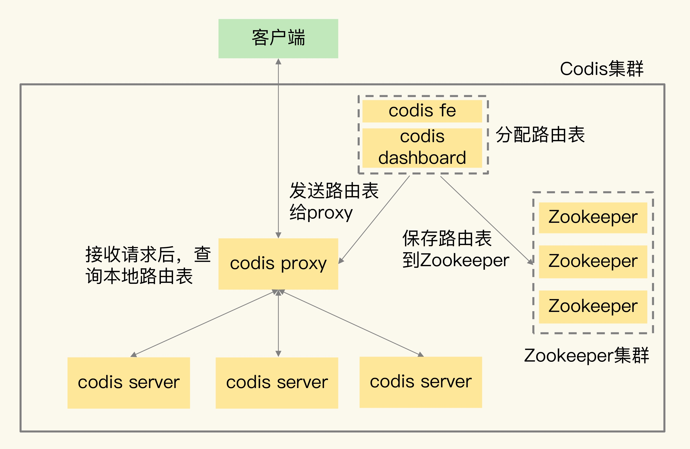
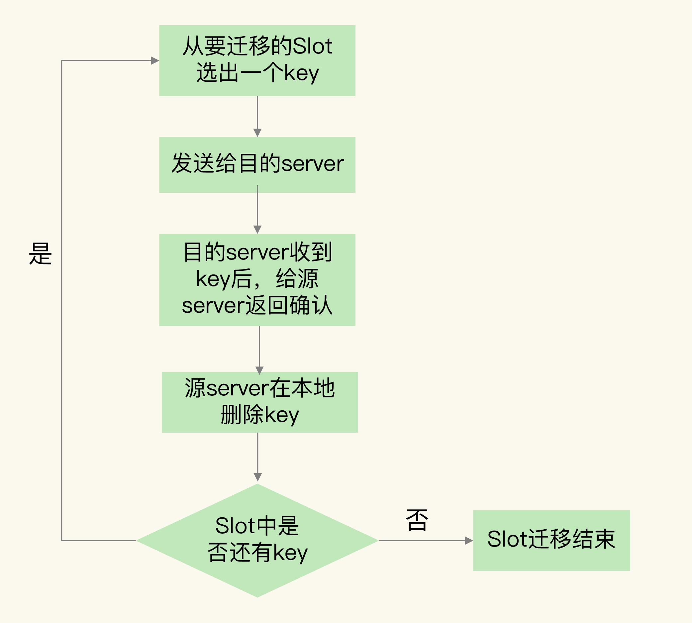
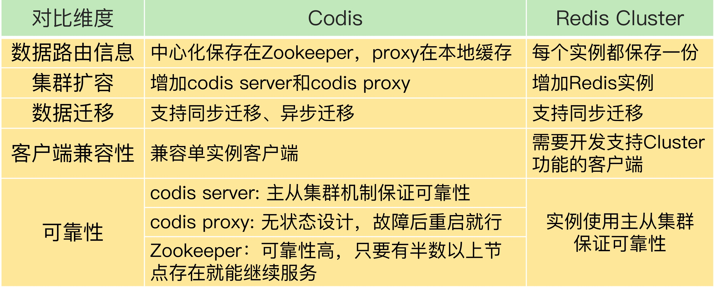

Redis 切片集群使用多个实例保存数据，能够很好地应对大数据使用场景。而Codis 也是一种提供切片集群的解决方案
Codis 整体架构和基本流程
Codis 包含四个组件
- codis server : 进行二次开发的Redis实例，增加了额外的数据结构，支持数据迁移操作，主要负责具体的读写请求
- codis proxy : 接受客户端请求并吧请求转发到codis server
- Zookeeper 集群 : 保存集群元数据
- codis dashboard 和codis fe : 集群管理工具

基本流程
- 先使用codis dashboard 设置 codis server 和codis proxy 访问地址，设置完成后codis server 和codis proxy 才会接受访问
- 客户端直接和codis proxy 连接
- codis proxy 接受到请求后，查询请求数据和codis server 映射关系，并把请求转发给相应的codis server 
Codis 关键技术原理
数据如何在集群中分布
Codis 数据如何分布式通过逻辑槽映射完成的
- Codis 一共有1024个Slot ，编号依次是0到1023，把1024个逻辑槽 手动或者是自动分配给codis server
- 读取数据时，根据CRC32算法计算数据key的哈希值，并把Hash值对1024取模，取模的值就是Slot编号，然后根据之情的映射到codis server 
Slot 和 codis server的映射关系称为数据路由表，路由表会缓存在本地同时保存在zookeeper 中

数据分布Codis 和 Redis Cluster 区别
- Codis 中的路由表是通过 codis dashboard 分配和修改的，并保存在Zookeeper中，如果修改会重新发送给codis proxy
- Redis Cluster 中数据路由表是通过实例间相互通信传递的，最后在每个实例上都会保存一份
集群扩容和数据迁移
Codis 集群扩容
Codis 扩容包含codis proxy 和 codis server 增加
- codis server 增加
- 启动新的codis server ，将他加入集群
- 把数据迁移到新的server
数据迁移流程
Codis 按照数据Slot粒度进行迁移
- 在源server上，Codis 从要迁移的Slot上随机选择一个数据，发送给目的server
- 目的确认收到消息后，会给源server返回确认消息。源server删除刚迁移的数据
- 不断重复 步骤1 和步骤2 知道所有Slot 迁移完成

同步迁移和异步迁移：区别在迁移过程中源server是否阻塞；异步迁移bigkey 采用拆分指令的方式进行迁移
切片集群方案
